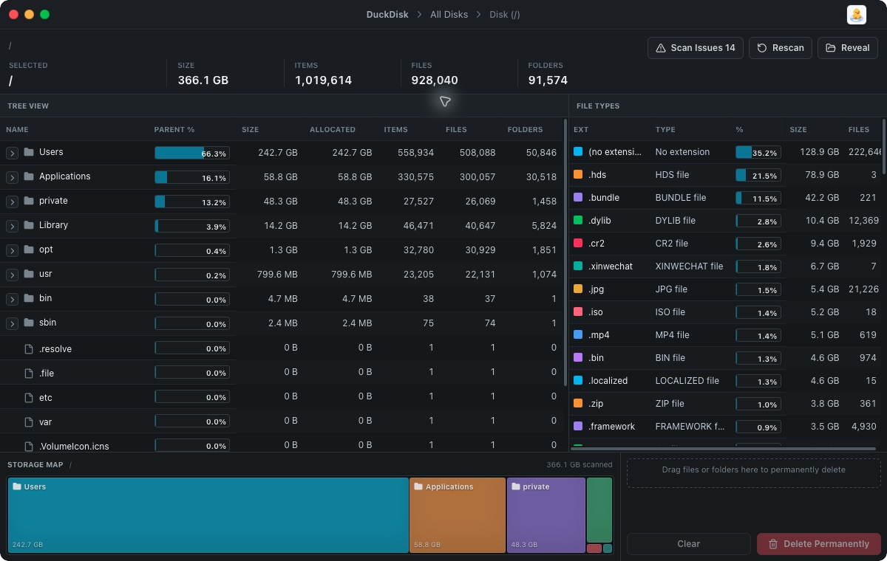
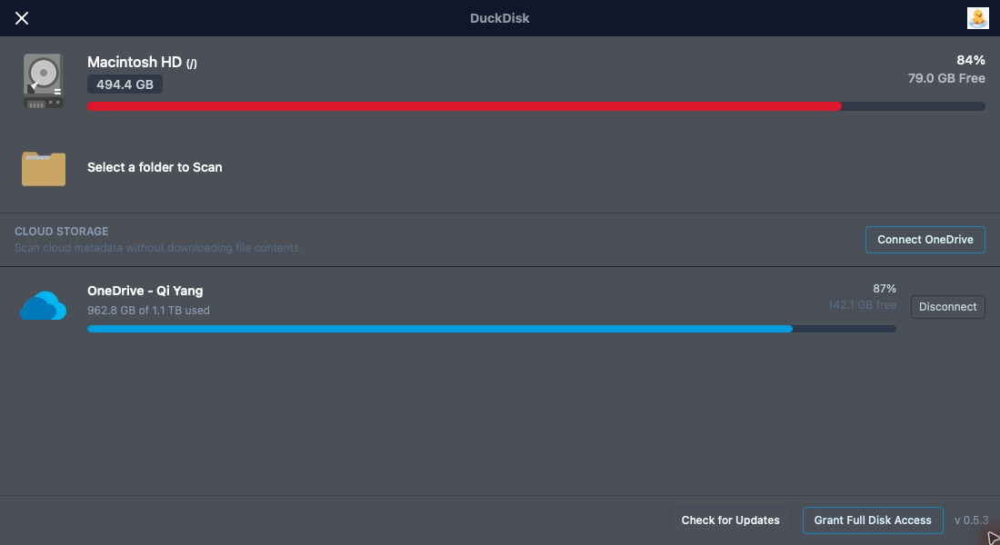
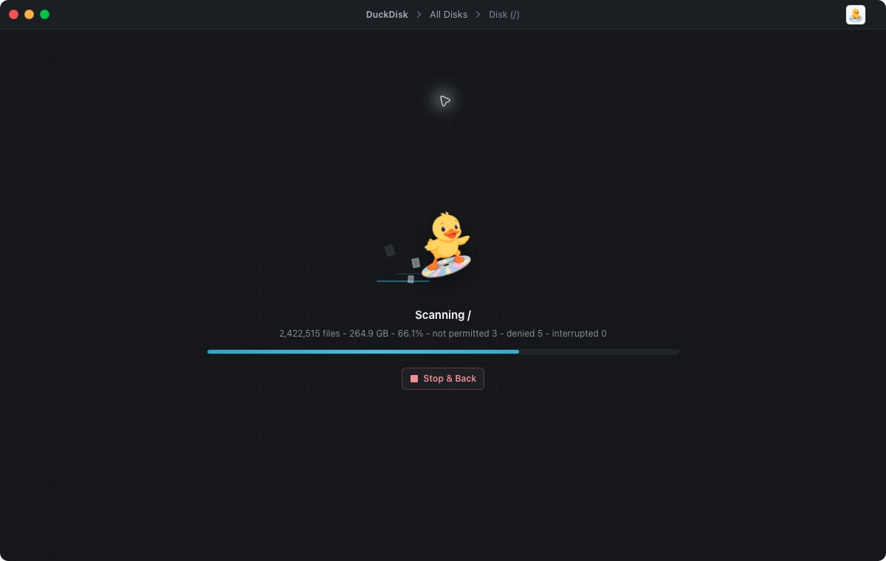

WizTree-style disk analyzer for Mac
DuckDisk
A fast macOS disk space analyzer for finding large folders, inspecting file types, and cleaning up local storage from a dense table-first interface.

Built for repeated cleanup work
Sort folders and files by size, allocated size, item count, and parent percentage.
See extension totals and percentages beside the directory table.
Reveal files and folders quickly before deciding what to remove.
Collect cleanup targets in one delete zone and remove them deliberately.
Screenshots


Install
Download the latest DMG release, open it, and drag DuckDisk into Applications.
For full-disk scans, grant DuckDisk Full Disk Access in macOS Privacy & Security settings.
Keywords
DuckDisk is a disk usage visualizer, macOS disk space analyzer, and WizTree alternative for Mac users who want fast local cleanup.